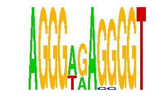

family_1 |
|---|
|  |
| Download PWM |
| Download instances (motifs) |
| Show motif distribution |
Query_ID | Query_Consensus | Subject_Name | Source_DB | Subject_ID | Length | Orientation | Offset | Divergence | Overlap | Subject_Consensus |
|---|---|---|---|---|---|---|---|---|---|---|
| family_1 | AGGGAGAGGGGT | GGGTGGRR | JASPAR | PF0056 | 8 | as given | 8 | 0.174 | 4 | GGGTGGGG |
| family_1 | AGGGAGAGGGGT | ARGGGTTAA | JASPAR | PF0065 | 9 | as given | 6 | 0.712 | 6 | AAGGGTTAA |
Sequence | Start_position (from start) | Start_position (from end) | Average conservation | Best conservation score | Instance_with_best_CS | Best_Z-score | Instance_with_best_ZS | Strand |
|---|---|---|---|---|---|---|---|---|
| chr6:128051000-128059200 | 1848 | 1860 | 0.00416667 | 0.019 | AGGGWGASGGGT | 29.574373 | AGGGWGAGSGGT | -1 |
| chr4:134790900-134804900 | 8301 | 8313 | 0.0385833 | 0.063 | AGGGWGASGGGT | 29.574373 | AGGGWGASGGGT | 1 |
| chr17:6977600-6985500 | 2850 | 2862 | 0.00116667 | 0.01 | AGGGWGAGSGGT | 29.574373 | AGGGWGASGGGT | 1 |
| chr7:149569800-149575100 | 2542 | 2554 | 0.00375 | 0.019 | AGGGWGASGGGT | 22.759912 | AGGGWRAGGGGT | 1 |
| chr15:96829500-96835700 | 1926 | 1938 | 0.0515833 | 0.124 | AGGGWRAGGGGT | 22.759912 | AGGGWRAGGGGT | -1 |
| chr9:62199900-62223900 | 3523 | 3535 | 0.00716667 | 0.017 | AGGGWRAGGGGT | 29.574373 | AGGGWGASGGGT | 1 |
| chr19:7490100-7500100 | 5260 | 5272 | 0.0025 | 0.01 | AGGGWGASGGGT | 29.574373 | AGGGWGAGSGGT | 1 |
| chr13:114583871-114588400 | 4047 | 4059 | 0.00683333 | 0.01 | AGGGWRAGGGGT | 29.574373 | AGGGWGASGGGT | -1 |
| chr10:79613600-79633800 | 1969 | 1981 | 0.682667 | 0.908 | AGGGWGAGSGGT | 29.574373 | AGGGWGASGGGT | 1 |
| chr14:55045010-55053700 | 7383 | 7395 | 0.777917 | 0.875 | AGGGWGAGSGGT | 29.574373 | AGGGWGASGGGT | 1 |
| chr5:115745600-115751971 | 5086 | 5098 | 0.00208333 | 0.016 | AGGGWGAGSGGT | 29.574373 | AGGGWGASGGGT | 1 |
| chr6:127100100-127106100 | 1102 | 1114 | 0.999667 | 1 | AGGGWGASGGGT | 29.574373 | AGGGWGAGSGGT | -1 |
| chr6:124761400-124765900 | 4304 | 4316 | 0.0673333 | 0.582 | AGGGWGAGSGGT | 29.574373 | AGGGWGAGSGGT | 1 |
| chr10:127925700-127937500 | 8338 | 8350 | 0.996667 | 1 | AGGGWGAGSGGT | 29.574373 | AGGGWGASGGGT | -1 |
| chr9:69299700-69309000 | 3288 | 3300 | 0.00191667 | 0.006 | AGGGWRAGGGGT | 29.574373 | AGGGWGASGGGT | 1 |
| chr13:45485400-45489000 | 864 | 876 | 0.00191667 | 0.005 | AGGGWRAGGGGT | 22.759912 | AGGGWRAGGGGT | -1 |
| chr10:117539709-117541500 | 573 | 585 | 0.774083 | 0.989 | AGGGWGASGGGT | 22.759912 | AGGGWRAGGGGT | 1 |
| chr13:28506400-28514000 | 1308 | 1320 | 0.99475 | 1 | AGGGWRAGGGGT | 22.759912 | AGGGWRAGGGGT | 1 |
| chr15:76734156-76738600 | 2018 | 2030 | 0.02675 | 0.061 | AGGGWRAGGGGT | 22.759912 | AGGGWRAGGGGT | 1 |